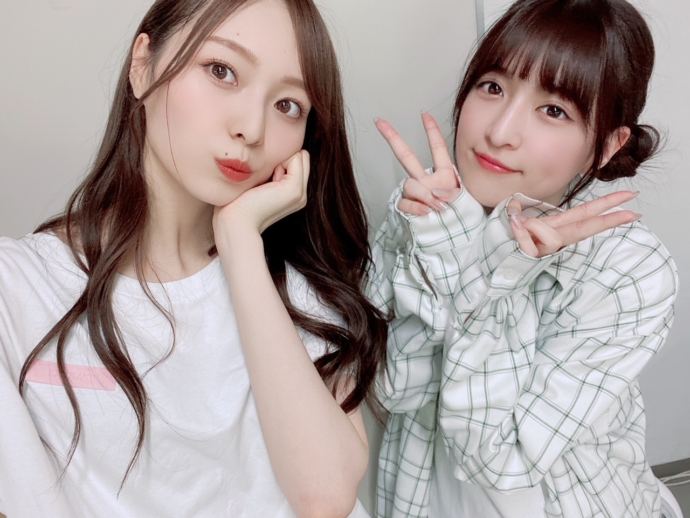
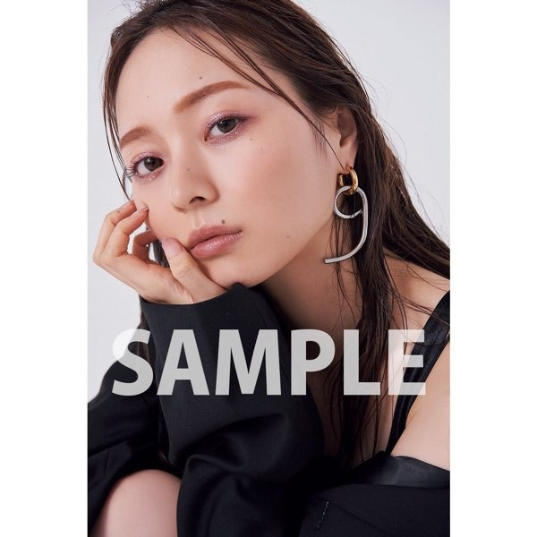
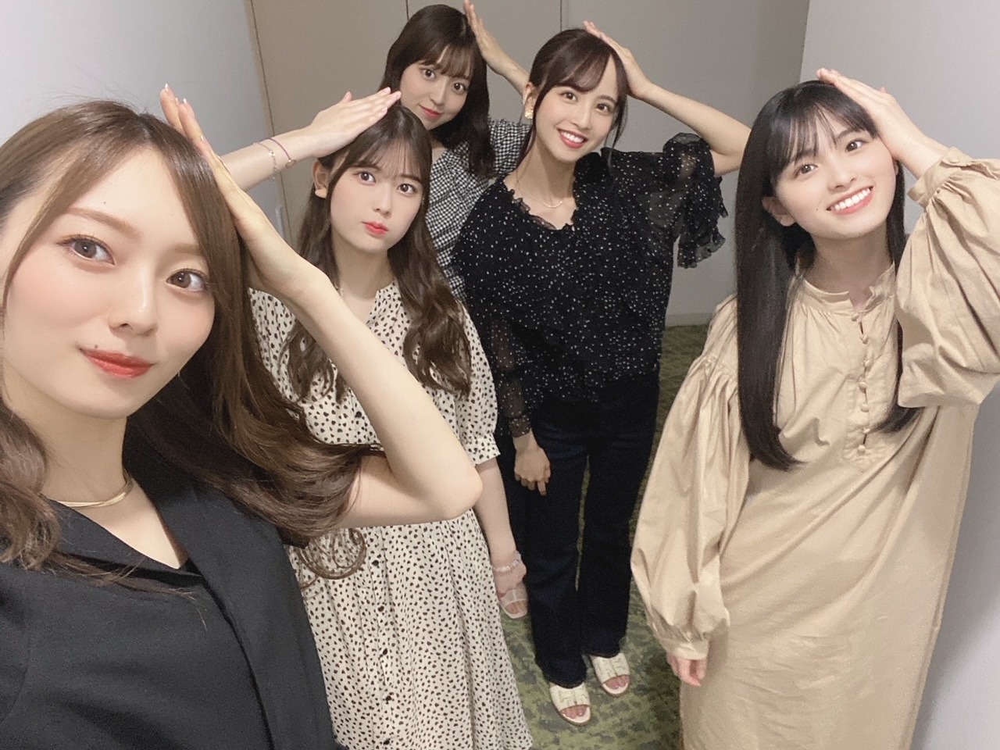
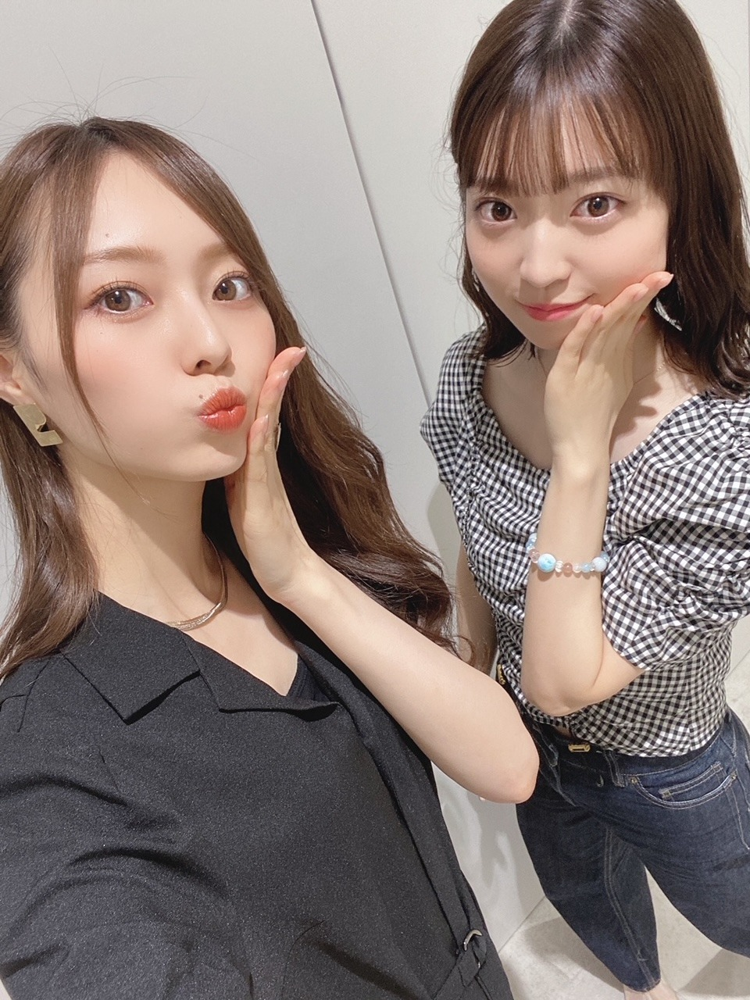

いつもの朝よ
と思ったら中旬！
もうここまできたら
一気に年末まで過ぎ去ってしまうんでしょうねえ
毎年こんな感じ。
早いね〜。長く感じるときもあるけど
なんだかんだ早くすぎてしまう季節。
夏は苦手だけど
バタバタしているうちに いつの間にか
コート着ているんだろうなあ~
秋冬、待ち遠しい︎︎︎︎✌︎
さて、２年ぶりの全国ツアー
回らせてもらってます。
去年の夏を振り返った時
ツアーが無い分やっぱり
何をしていたか 具体的に思い出すのに 説明するのに時間がかかってしまうのですが...
今年は 全身で夏を感じられています。
荷造りの時間も
ハードディスクを整理する時間も
新幹線の移動も ホテルでの過ごし方も。
懐かしい。懐かしいし 久しぶりだけど、
どこか身体に染み付いている感覚。
有難いです。
楽しんでいただけていますか？
ステージから見る皆様のお顔は
とても笑顔で溢れていて こちらも胸がいっぱいになります。
正直、
まだまだ気にしなきゃいけないことだらけで
以前のように 全てが元通りに...
とは行かない現状ではありますが
様々な縛られたルールの中、
必死に守ろうと 慣れない中でも
楽しもうとしてくださる姿には
感謝の気持ちでいっぱいです。
２年ぶりということもあり
色々 溢れる想いもあったりするのですよ。
その感情を直接皆様へ届けられる場があるのはなにより幸せ！
いつも本当にありがとうございます！
名古屋、福岡、そして東京ドームと続きます。
日常生活で抱える鬱憤を
全て持っておいで！わたしたちが
全部忘れさせてあげます(^-^)

あやちゃーーーん
明日は名古屋！
楽しみましょうね︎︎︎︎✌︎
最近は有難いことに
色々バタバタさせてもらってまして
なんだか必死に、過ごしてます
そんな中でも全ての物事へ
丁寧でありたいという理想もあり
中々苦戦してます
理想を求めすぎると苦しくなるから
そこの塩梅も難しい〜
忘れたくない時間も言葉も
余裕が無くなると どうも記憶する力が薄まる気がしていて。
なので毎日の日記はわたしにとってもても大切☀︎
長く書き続けられていることに驚き。
まあ、書き忘れて
３日分一気に書いたりとか
そんな日もあったりするのだけどね。
この緩さが続けられる秘訣というか、
３日くらいならきちんと覚えているから(^-^)
いやあ最近は特に
全ての物事の進むスピードがとてつもなく早く感じて
わたしだけ取り残されている気持ちになります
時間が早い もあるけど
時間とかではなくて
動いている全ての物事が、早く感じる
そういう時期なんだと察しながらも
ならばそれに向けて準備というか
私のできることを見つけなきゃと
あせあせ しております。
もうすぐ、６年目になるんです。
年数だけ立派に重ねていくものだから
こちらもこちらで あせあせ してしまいます。
お知らせさせてください！
８／２４ に発売になります
｢B.L.T. １０月号｣ 表紙を務めさせていただきます☀︎
いやあ、かなり新鮮というか
どんどん変わっていく自分の姿に
ひたすら楽しい感情しか無かった一日でした。
セブンネットさんにて
予約始まっています~！
ポストカードが ３パターンもあるみたい︎︎︎︎✌︎
A
https://bit.ly/3s9vNRK
B
https://bit.ly/3yF1apK
C
https://bit.ly/3s8gd9b
ぜひこちらから☀︎

これはCパターン！
大人、です(^-^)
それから
ももこ かえで たまみ れんか わたしの５人で
乃木坂遊ぶだけ ロケ行ってきました！
この５人でのお仕事が
まさかできるなんて思わなくて...
なんて幸せなんだろうと噛み締めながら
撮影してきました。風鈴作り！
この子達がいればなんでも楽しい！

可愛くてたまらない
愛おしい子達です。
本日配信スタートしました！ぜひ。
夏なのに指先の乾燥がすごくて
ネイルオイルが手放せません。
指先のオイルは安定のuka。
ハンドクリームは気分で使い分け、
最近はHuxleyがおおいかなあ~。
ボディクリームは長年使っているロジェガレ。
夏場はこってり過ぎないこれがちょうどいい！
ほどほどに、
ゆるゆるに、がんばりましょうね(^-^)

たまみのショート好きです☀︎
たまみならなんでも好きだがね
また、書きます
いちじくが食べたいのに
中々ゲットできなくて...
そんな中、今日お仕事でいただいたの☀︎
大切に、食べます
今夜はフルーツパーティーやあ〜
Original：https://www.nogizaka46.com/s/n46/diary/detail/62783?ima=4935&cd=MEMBER